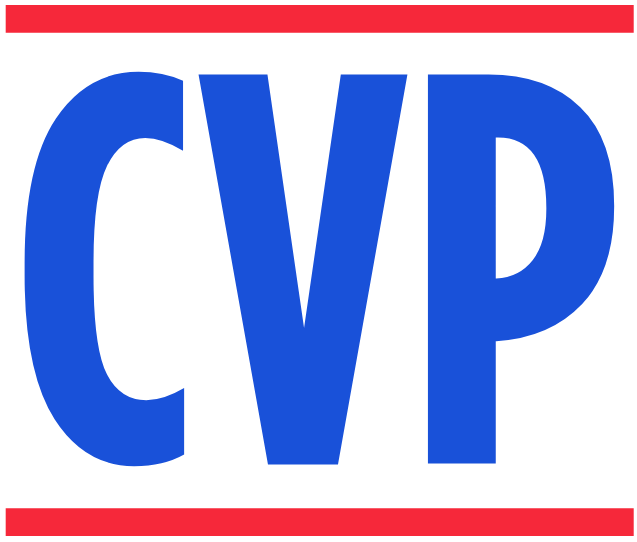
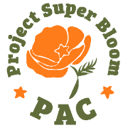
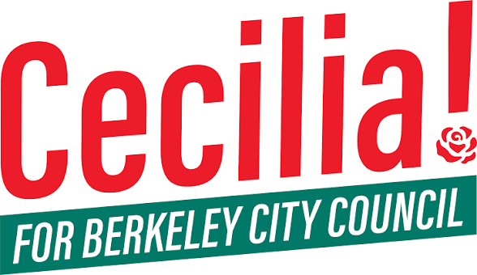

Education

Concentration in comparative government with significant coursework in conflict resolution, international relations, and political psychology.
An open-source tool evaluating strategic labor leverage across all 3,143 U.S. counties.
Experience

Backend and strategic support across five Bay Area campaigns. Coordinated 30+ events, created campaign materials, and directed communications.

Directed four student fellows on fundraising and statewide policy research. Raised $24,000 through multiple channels and maintained relationships with 30+ California legislators. Sat on the California Working Families Party steering committee.

Executed 20+ fundraising events and raised $37,000 leveraging Berkeley’s public financing program.
Led commission expansion throughout the pandemic and established youth representation on environmental commission.
Presided over 3,000-delegate conference. Advocated on public health and nonprofit policy at the state level.
Tools
NationBuilder · QGIS · Canva Pro · CallTime.ai · ActBlue · Meta Ads · Squarespace · Claude Code · GitHub · Supabase · Porkbun · PDI
Expertise
Coalition management · Legislative advocacy · Candidate coaching · PAC operations · Fundraising strategy
Press
“This is the fight to win all fights and we need to show up in a way that is more powerful and more abundant than in the past.”
“One group of residents of our city that has really been left out of policy decisions are youth.”
“I think a lot of the work that commissions do is symbolic, because City Council doesn’t actually have to listen to us.”
“Every generation has a social and political movement, and this is ours.”